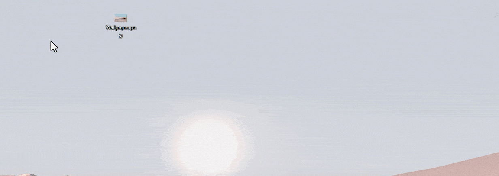
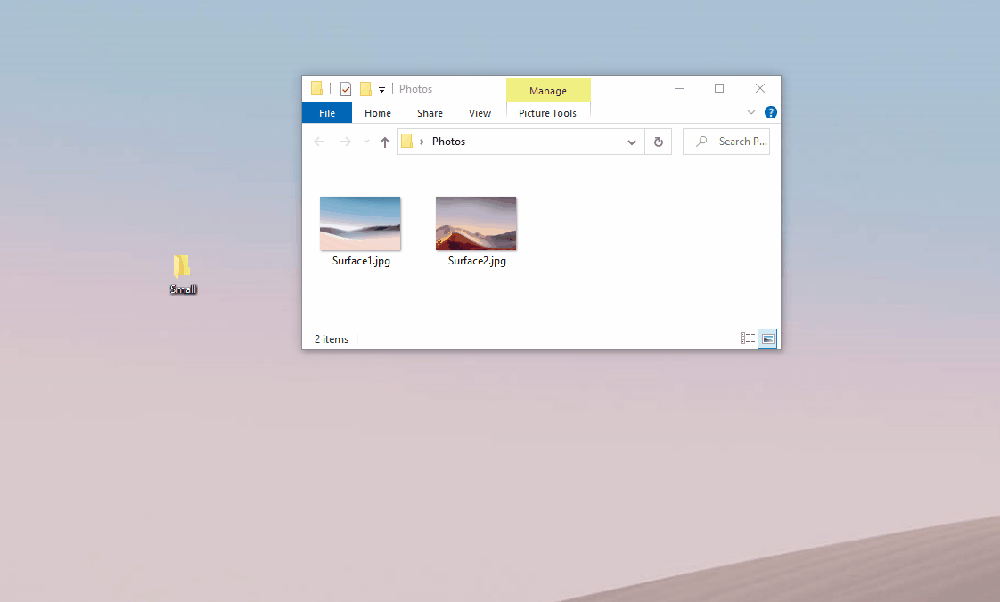
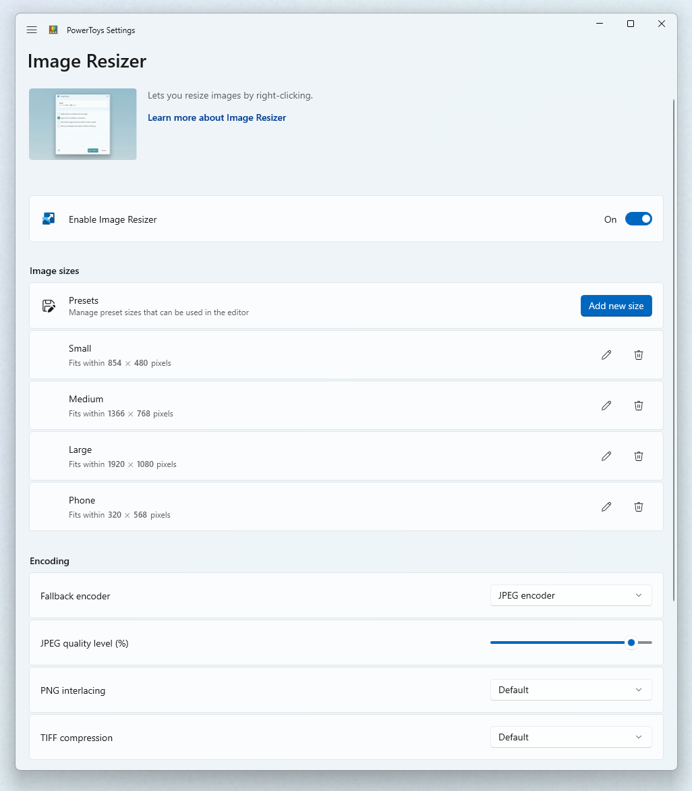

Image Resizer utility
Image Resizer is a Windows shell extension for bulk image-resizing that helps you quickly resize multiple images at once. After installing PowerToys, you can right-click on one or more selected image files in File Explorer and select Resize with ImageResizer from the menu to streamline your image processing workflow.

Image Resizer allows you to resize images by dragging and dropping your selected files with the right mouse button. This allows resized pictures to quickly be saved in a folder.

Note
If Ignore the orientation of pictures is selected, the width and height of the specified size may be swapped to match the orientation (portrait/landscape) of the current image. In other words: If selected, the smallest number (in width/height) in the settings will be applied to the smallest dimension of the picture. Regardless if this is declared as width or height. The idea is that different photos with different orientations will still be the same size.
Settings
On the Image Resizer page, configure the following settings.

Sizes
Add new preset sizes. Each size can be configured as Fill, Fit, or Stretch. The dimension to be used for resizing can be centimeters, inches, percent, or pixels.
Fill versus Fit versus Stretch
- Fill: Fills the entire specified size with the image. Scales the image proportionally. Crops the image as needed.
- Fit: Fits the entire image into the specified size. Scales the image proportionally. Doesn't crop the image.
- Stretch: Fills the entire specified size with the image. Stretches the image disproportionally as needed. Doesn't crop the image.
Tip
You can leave the width or height empty. The dimension will be calculated to a value proportional to the original image aspect ratio.
Fallback encoding
The fallback encoder is used when the file can't be saved in its original format. For example, the Windows Meta File (.wmf) image format has a decoder to read the image, but no encoder to write a new image. In this case, the image can't be saved in its original format. Specify the format the fallback encoder will use: PNG, JPEG, TIFF, BMP, GIF, or WMPhoto settings. This isn't a file type conversion tool. It only works as a fallback for unsupported file formats.
File
The file name of the resized image can use the following parameters:
| Parameter | Result |
|---|---|
%1 |
Original filename |
%2 |
Size name (as configured in the PowerToys Image Resizer settings) |
%3 |
Selected width |
%4 |
Selected height |
%5 |
Actual height |
%6 |
Actual width |
Example: setting the filename format to %1 (%2) on the file example.png and selecting the Small file size setting, would result in the file name example (Small).png. Setting the format to %1_%4 on the file example.jpg and selecting the size setting Medium 1366 × 768px would result in the file name example_768.jpg.
You can specify a directory in the filename format to group resized images into sub-directories. Example: a value of %2\%1 would save the resized image(s) to Small\example.jpg
Characters that are illegal in file names will be replaced by an underscore _.
You can choose to retain the original last modified date on the resized image or reset it at the time of the resizing action.
Install PowerToys
This utility is part of the Microsoft PowerToys utilities for power users. It provides a set of useful utilities to tune and streamline your Windows experience for greater productivity. To install PowerToys, see Installing PowerToys.